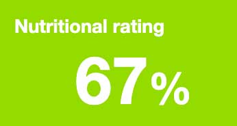
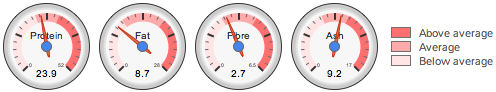

How can I get my business listed on the store finder?
Why is the All About Dog Food business registered in Finland?
How is AllAboutDogFood.co.uk funded?
Do I need to change dog foods?
Back to top
As long as your dog is fit and healthy and you're both happy with the food then there's no reason to change. Different dogs will always do better on different foods and while the ingredients list allows us to predict which foods are likely to be better for the majority of dogs, there will always be plenty of cases where an individual dog is better suited to some of the lower-rated foods than some higher-rated ones. Our aim is simply to help you to find a food that keeps your dog healthy and happy so if you've already done that, we would certainly recommend sticking with it no matter what rating we give it.
On the other hand, if your dog is showing signs of illness, even occasionally, then a change may be the best option. Early signs of dietary problems include:
Digestive upsets: loose motions (often getting looser over the course of the day), excessive or very smelly wind, regular vomiting (particularly after meals).
Of course, choosing a dog food isn't just about health. You may want to change for financial or ethical reasons, for convenience or simply to give your dog a change. Whatever your reason for changing, please take a look at our food changing guide to make the switch as easy as possible on your four-legged friend.
Which dog food is best?
Back to top
This is, by a country mile, the most asked question on any dog food advice site and although we'd love to say 'Brand x is the best food for your dog', it's never that simple. For most dog owners, the best place to start is our Dog Food Directory where you can enter your dog's details to get a list of foods that should fit the bill. The more details you can give about your dog the more tailored the list will be. The results will be given in order of their expert rating so the nearer the top, the better we would expect them to be for your dog but since every dog is different, finding the perfect match for your dog might need a little trial and error. For more tips on choosing the right feeding regime for your dog, please take a look at our Dog food 101 article.
How are the Nutritional Ratings calculated?
Back to top
AllAboutDogFood.co.uk is all about helping dog owners to make the very best decisions for their dogs. To make things easier we give every dog food and treat a special 'Nutritional Rating' out of one hundred.
The nutritional rating shows how beneficial we expect a food or treat to be for the majority of dogs
What makes our ratings unique though is the way in which they are calculated: ever since starting to put the site together in 2011 we have been working hard to develop and fine tune our very own algorithm to generate the most accurate, most precise nutritional ratings on the internet.
When an ingredient list is fed into the algorithm, it reads through the list, identifying the quality and quantity of every single ingredient. Of course, as long as the ingredients' percentages are stated, the algorithm's job is fairly simple but where it really comes into its own is in calculating the likely percentages of ingredients who's percentages are not provided. Through some mathematical wizardry, the algorithm is able to identify the most probable quantity of every ingredient in the food, whether the manufacturer wants us to know or not.
Ingredients are then scored on a number of criteria - bio-appropriateness, quality and bio-availability of nutrients, whether the food contains too much or too little of any individual ingredients or classes of ingredients, synergies between specific ingredients and the nutrients they contain and so on.
The program also takes into account the food's processing method (extrusion, pasteurisation, baking, cold pressing etc) and how it is likely to have affected the nutrients contained within the ingredients.
For simplicity, the range is calibrated with the lowest scoring food at 1% and the highest at 100%. All other foods fit somewhere on the scale in between.
Making sure that the true benefit of each and every ingredient is scored as accurately as possible in this way has required the gathering of vast amounts of data from hundreds of sources over the years but the work is far from over. As new ingredients come into the pet food industry and new studies continue to push back the boundaries of our collective nutritional knowledge, we'll continue to build our database and tweak our algorithm to keep our ratings the most up-to-date, accurate and impartial anywhere on the internet!
What do the profile symbols mean?
Back to top
Our unique profile symbols are intended to let you quickly and easily let you know if a food or treat might be suitable for your dog or not. We have given each food five symbols to represent 5 of the most commonly discussed dog food characteristics - additives, hypoallergenic ingredients, meat content, the clarity of the labelling and the nutritional 'completeness' of foods.
You will only see our natural logo on foods that do not have any added artificial preservatives, antioxidants, colourings and flavourings. The logo is also not awarded to foods containing other controversial synthetic ingredients like STPP.
The high meat logo means that the finished food contains at least 30% meat ingredients (including dried meat meals, dehydrated meats, 'freshly prepared meats', fresh meats and hydrolysed meats) on a dry matter basis (once all of the water has been removed). Obviously, if the percentage of meat is not stated the high meat logo cannot be awarded.
Since it's not so important for dog treats to contain a high proportion of meat (or any meat at all for that matter) this logo is not displayed on the treat directory.
For a food to be hypoallergenic it must have a low chance of causing averse reactions. We therefore only award our hypoallergenic logo to foods that are free from all ingredients that are regularly linked by veterinarians to food allergies and intolerance in dogs like wheat, maize, dairy products, soya products and artificial additives. Currently we do not award the hypoallergenic logo to foods containing carrageenan.
In order to receive our clearly labelled logo, foods must state each ingredient clearly and individually and must give a good indication of how much meat ingredients the recipe includes. Any omitted, unspecified or vague ingredients will mean that the clearly labelled logo is not awarded.
Our complete logo is only given to foods that comply fully with the complete food nutrient tolerances as recommended by the European Pet Food Industry Federation (FEDIAF). These guidelines are designed to ensure that foods contain at least the basic nutrient levels required by pets. HOWEVER, a food not having this logo is not necessarily a bad thing - take a look at our guide to complete foods for more information.
Where logos are greyed-out it is because, to the best of our knowledge, the product does not meet the criteria given above. Where logos are omitted all-together, it is because we have not yet received the necessary information to confirm either way.
How are the daily feeding amounts calculated?
Back to top
For each featured product we have collected the manufacturer's feeding guidelines, either from the food's packaging or from the manufacturer's own website. When you select your dog's weight on All About Dog Food, the site goes about calculating the feeding amounts based on the manufacturers' suggestions for an average dog in the selected weight bracket. For example, if you select 20-30kg as your dog's weight, the feeding amounts are calculated for a 25kg dog.
Unfortunately, it's rarely that easy. Many manufacturers have very different ways of providing feeding guidelines. For example, where food X tells you how much to feed if your dog weighs 5kg, 10kg, 15kg and so on, food Y may only provide a figure for 'small dogs', 'medium dogs' etc. Others might say something like "dog's weight: 0-20kg, daily amount: 100-400g" which leaves a awful lot of guesswork. In all cases, where exact amounts are not given, we extrapolate the figures that are provided to make a best estimate.
For puppies things get even more complicated: Many foods provide different feeding guidelines depending on the puppy's age and while some feeding amounts are based on the puppy's current weight, others use the expected adult weight. To allow for a more accurate comparison, we have re-calculated the feeding amounts so that you only have to enter the puppy's current weight. Where several figures are given for different ages of puppies, we have used the one for 6 months of age.
Where dog food producers provide alternative feeding amounts for any other reasons (for example, for very active dogs, breeding bitches etc.) we only ever use the 'normal' value.
For these reasons, we strongly recommend consulting the manufacturer's full guidelines before feeding any dog food.
The daily feeding amounts provided by All About Dog Food are provided only to allow dog owners to make like-for-like comparisons and to get a reflection of the relative cost of feeding a food. The figures provided on All About Dog Food are approximate and should not be used as an alternative to the manufacturer's own guidelines which can be found on the product's packaging.
How are the daily feeding costs calculated?
Back to top
The feeding costs are calculated based on feeding the suggested daily amount (see above) from the largest pack size bought at full recommended retail price. Since prices are changing all the time, some costs may be inaccurate. If you notice any inaccuracies at all, please contact us.
What do the nutrient levels mean for my dog?
Back to top
On the packaging of every dog food in the land you will find the levels of four macro-nutrients - protein, fat, fibre and ash. For some dog owners (see below), these levels can be very important so with each product listing, we have provided nutrient dials to help see how different foods compare. The dials show the percentages of the nutrients after the water has been removed allowing you to directly compare the nutrient makeup of dry foods against wet foods.

Do I need to worry about nutrient levels? Probably not. As long as your dog is fit and well and doesn't have any history of health problems, then chances are the macro-nutrient levels of your dog food won't even need to cross your mind. If, on the other hand, your dog belongs to one of the below groups, the nutrient levels may need to be considered.
Overweight dogs: If your dog needs to lose weight, try to look for a food with below average fat levels.
Hungry dogs: For very food-orientated dogs, a high fibre diet can really help by slowing down digestion and making him feel fuller for longer.
Highly exercised dogs: The best sources of energy for a dog are fat and protein so if your dog is engaged in rigorous activity on a daily basis, he may benefit from a food with above average fat and protein levels.
Puppies: To maintain healthy growth, puppies need plenty of protein and fat - any puppy formula should fit the bill.
Health problems: Many health problems can be eased or even cured with dietary changes so if your dog is suffering from anything from itchy skin to cancer, please ask your vet what macro-nutrient levels would be best.
Once you have an idea of the best nutrient profile for your dog, please visit our Dog Food Directory - you can specify the levels of protein, fat, fibre and ash you're looking for in the filers section on the left.
How do I get a food or treat listed on the site?
Back to top
Our mission is to get every dog food and treat that is widely available in the UK listed on All About Dog Food. Naturally, with so many products out there and new ones springing up all of the time, some have to wait longer than others.
As a rule, we prioritise new listings by how many requests we receive for them so if fifty people ask us to review Brand X but only two request Brand Y, we will do our best to get Brand X listed first.
So basically, to get a food or treat featured on the site, let us know and we'll add it to the list. If you know other people that would also like to see the product reviewed, ask them to get in touch with us as well as the more requests we receive the faster it will be reviewed.
And while you're waiting, don't forget that you can always use our Instant Review Generator to get a bit more insight into foods that aren't yet featured on the site. Just enter the ingredients list as it's printed on the packaging or website, click the big arrow and hey presto, an instant review just for you!
How can I get my business listed on the store finder?
Back to top
If you sell dog foods or treats through a 'bricks and mortar' business, we want you on our store finder!
Basic listings are absolutely free or, for a very small monthly charge, you can get an all-singing, all-dancing premium listing. With over 15,000 people using the store finder every month, it tends to pay to go premium.
Online-only retailers can still work with us by becoming one of our 'approved online retailers'. Again, contact us for more information.
Why is the All About Dog Food business registered in Finland?
Back to top
All About Dog Food is registered in Finland because that's where I (the site's owner and creator, David) live.
My wife (who is from Finland) and I lived in the UK until 2011 but being there was unfortunately holding back her career and since I had the crazy idea of making a certain dog food related website, which I could do from anywhere in the world, the choice to move to Finland was really a no-brainer. We both quit our jobs, packed our bags and started our new life in Finland.
It was that summer that I started learning to code and registered the domain AllAboutDogFood.co.uk.
Despite not living in good old Blighty, I do get back very regularly and am lucky enough to have a dedicated group of UK dog owners, pet food retailers and pet care professionals who help me to stay up to date with all of the industry goings on.
How is AllAboutDogFood.co.uk funded?
Back to top
As much as I would love to be able to live on good will alone, running the site is a full time job and it does need to pay its way. Nevertheless, site independence and integrity has always come first and no money that could call that into question has ever been sought nor accepted.
The site makes money in three ways:
Shop online buttons
For every product listed on the site we try to find a reputable retailer to direct any interested visitors to. We always give first refusal to the manufacturers themselves as in theory they should be the most reliable source. If the manufacturer is not interested, we then offer the position to one of our trusted online pet shops.
Advertising
We don't offer a lot of ad space here on All About Dog Food but the little that we do is an important source of revenue for the site.
We work with a handful of excellent online pet shops that share our passion for pet welfare and you can see their banner adverts here and there around the site.
Pet food manufacturers are only permitted to advertise on their own product pages so unless you click on their products, you won't see their ads.
We do not do any 'text ads', sponsored posts or other forms of obscure advertising. All the ads we feature are easy to identify and whether you want to interact with them or not will not affect your experience of the site at all.
Store finder
Lastly, our smallest revenue stream is the store finder. While businesses are welcome to list their information with us for free, they also have the option to add some bells and whistles to their listings for a very small monthly fee.
And that's it. We don't charge for listing products and we never accept any other forms of payment, donations or gifts from any vested interests.